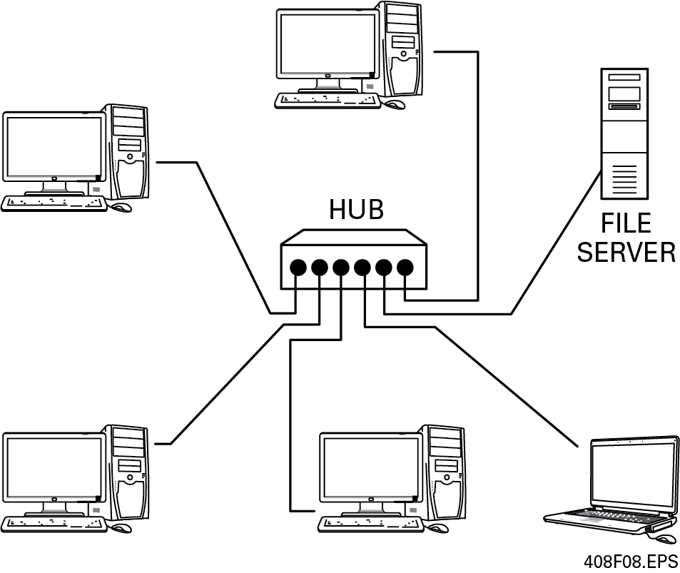

Section Four
4.0.0 OSI Reference Model
In 1977, the International Organization for Standardization (ISO) created the Open Systems Interconnection (OSI) Reference Model. The OSI model is a functional guideline for communication tasks. It consists of seven layers, as shown in Figure 4.
Each layer of the OSI model performs a specific function. The layers and functions are chosen based on natural subtask divisions. Each layer communicates with the same layer in other computers through layers in its own computer. Upper layers use the services of lower layers and provide services to higher layers.
In Figure 5, the transport layer (Layer 4) of Computer A wants to communicate with Layer 4 of Computer B. To do so, Layer 4 requests a service provided by the network (Layer 3) of Computer A. Layer 3 performs this service. In order to talk to Computer B, it requests a service of the data link (Layer 2). This process sends the request over the network medium. Once the message arrives at the destination computer, it ascends to Layer 4, where it is processed.
The seven functional layers of the OSI model are as follows:
-
Application layer – The application layer (Layer 7) is the upper layer in the model. It is concerned with the information in the message and how well it serves the user. This is where application programs (those computer programs that do the work) call upon the communication services. If this is not handled properly, the entire system will be useless because the goal of the system is to serve the user when and how the user wants to be served. Typical protocols at this layer include file transfer, access, and management (FTAM); and virtual terminal (VT).
-
Presentation layer – The presentation layer (Layer 6) prepares the information for the application (Figure 6). An example of this function is the conversion of a file received from a computer using the American Standard Code for Information Interchange (ASCII) into the proper format for display on a system using rich text format (RTF). Each system uses different codes to represent a letter in the alphabet. The presentation layer must know the differences and provide for them.
Figure: Figure 6 Presentation layer. -
Session layer – The session layer (Layer 5) is a coordinating function. It establishes the logical communication link between units and gradually feeds (buffers) the information to the device or program that performs the presentation function. The session layer also performs identification and authentication functions. It recognizes users and acknowledges both their arrival and departure. In some systems, the session layer can be a driving factor in system design; in others, it is a very small consideration.
-
Transport layer – The transport layer (Layer 4) provides a common interface to the communication network. It translates whatever unique requirements the higher layers might have into something the network can understand. It detects and corrects errors in transmission and provides for the expedited delivery of priority messages. It checks the data, puts it into the proper order (if necessary), and usually sends an acknowledgment back to the originating transport layer. It attempts to reestablish contact in the event of a network failure. Several industry and governmental standards exist for a transport function in data communication devices. The most common OSI protocol is called Transport Protocol Class 4.
-
Network layer – The network layer (Layer 3) sets up a logical transmission path through a switched or dedicated network (Figure 7). In local networks, the path may only be theoretical, since the individual units are almost always electrically connected, and the paths are defined by the network topology. In large systems, however, several transmission paths and even alternative media, such as dialed telephone service versus leased service, may exist. The transmission path may be temporary, or it may provide a continuous connection for two users of the network. In a local network, the network control function can exist in one place (star topology) or be distributed (bus or ring topology).
Figure: Figure 7 Network layer. -
Data link layer – The data link layer (Layer 2) performs the accounting and traffic control functions that are necessary to transfer information on an electrical link. It forms the information to be moved into strings (long lines) or blocks (packages) of characters. The data link layer functions like a railroad yard supervisor who is making up a train. It puts every piece of information into the right place and checks it before releasing it. Similarly, incoming information is broken down and properly routed within the receiving device.
-
Physical layer – The physical layer (Layer 1) describes the electrical and physical connection between the communicating units, as shown in Figure 8. Often the most visible layer, it is sometimes the most troublesome part of the system.
Figure: Figure 8 Physical layer. 